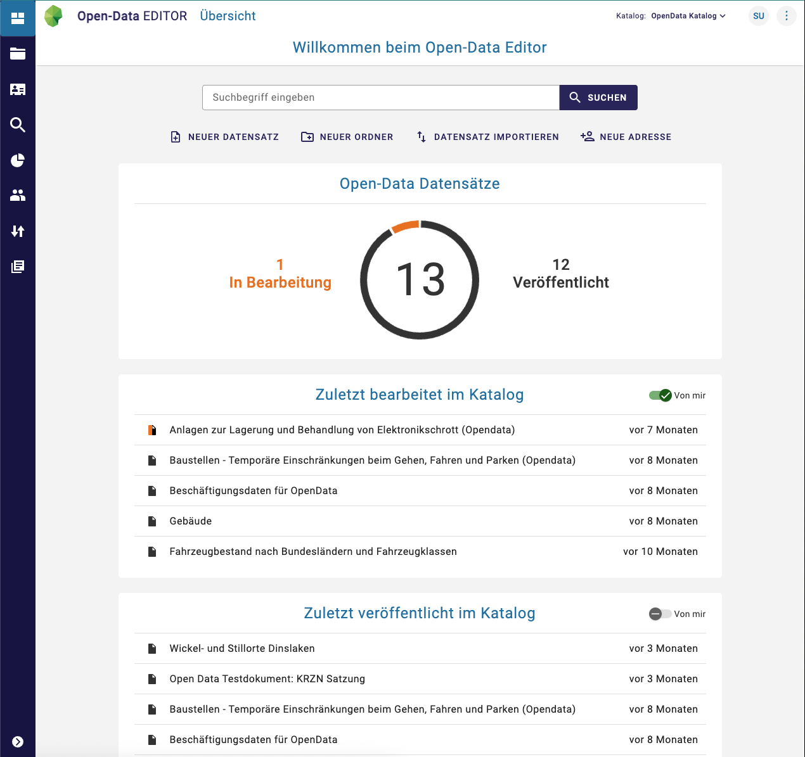

InGrid Editor
Allgemeines¶
Der InGrid Editor ermöglicht die Erfassung von Metadaten über vielseitige Formulare und bietet einen umfangreichen Workflow, der den Import sowie den Export verschiedener Formate erlaubt.
Insbesondere wird die Erfassung und Publizierung von ISO 19115/19119, OGC, INSPIRE und DCAT-AP.DE konformen Metadaten unterstützt.
Leitfaden¶
Sie haben die Installation bereits abgeschlossen? Dieser Leitfaden könnte Sie interessieren.
- Benutzeroberfläche

{ class=" grid-image" }Interesse an der Benutzeroberfläche?
Dieser Leitfaden bietet Einblicke in die Bedienung vom InGrid Editor.
Systemvoraussetzungen¶
| Systembestandteil | Anforderung | |
|---|---|---|
| Hardware | Arbeitsspeicher | 2 GB RAM |
| Festplattenspeicher | 10 GB frei | |
| Prozessor | Dual Core CPU | |
| Software | Java | Java 21 |
| Keycloak | Version 26.x oder höher | |
| Elasticsearch | Version 8.x | |
| PostgreSQL | Version 13 oder höher |
Installation¶
Info
Neben dem InGrid Editor wird zusätzlich eine Postgres-Datenbank, Elasticsearch und Keycloak eingerichtet werden. Hierfür müssen auch die Datenbanken für den Editor sowie auch für Keycloak erstellt werden. Diese haben standardmäßig den Namen
* ige
* keycloak
Docker¶
- Docker-Image
Zur Installation kann das folgende Docker-Image verwendet werden:
services:
editor:
image: docker-registry.wemove.com/ingrid-ige-ng
restart: unless-stopped
depends_on:
- postgres-db
environment:
- _JAVA_OPTIONS=-Xmx2g -Dstorage.diskCache.bufferSize=256 -Dspring.profiles.active=ingrid
- DATABASE_HOST=postgres-db
- DATABASE_USERNAME=${POSTGRES_DB_ADMIN}
- DATABASE_PASSWORD=${POSTGRES_DB_PASSWORD}
- KEYCLOAK_URL=http://keycloak:8080/keycloak
- KEYCLOAK_URL_FRONTEND=http://${HOST}/keycloak
- KEYCLOAK_BACKEND_USER=${KEYCLOAK_ADMIN}
- KEYCLOAK_BACKEND_USER_PASSWORD=${KEYCLOAK_PASSWORD}
ports:
- "8080:8080"
networks:
- informationgrid-network
Beispiel für vollständige docker-compose.yml
services:
postgres-db:
image: postgres:17.4
restart: unless-stopped
environment:
- POSTGRES_USER=${POSTGRES_DB_ADMIN}
- POSTGRES_PASSWORD=${POSTGRES_DB_PASSWORD}
volumes:
- ./_data/postgres-db/:/var/lib/postgresql/data
networks:
- informationgrid-network
elastic:
image: docker.elastic.co/elasticsearch/elasticsearch:8.18.0
restart: unless-stopped
environment:
- cluster.name=ingrid
- discovery.type=single-node
- cluster.routing.allocation.disk.threshold_enabled=false
- http.host=0.0.0.0
- transport.host=0.0.0.0
- http.cors.enabled=true
- "ES_JAVA_OPTS=-Xmx2g"
- xpack.security.enabled=false
volumes:
- ./_data/elasticsearch_data:/usr/share/elasticsearch/data
networks:
- informationgrid-network
keycloak:
image: docker-registry.wemove.com/keycloak
restart: unless-stopped
environment:
- KC_BOOTSTRAP_ADMIN_USERNAME=admin
- KC_BOOTSTRAP_ADMIN_PASSWORD=admin
- KC_HTTP_RELATIVE_PATH=/keycloak
- KC_HOSTNAME=http://${HOST}/keycloak
- KC_HTTP_ENABLED=true
- KC_PROXY_HEADERS=xforwarded
- KC_DB=postgres
- KC_DB_URL_HOST=postgres-db
- KC_DB_USERNAME=${POSTGRES_DB_ADMIN}
- KC_DB_PASSWORD=${POSTGRES_DB_PASSWORD}
- MAIL_SMTP=mailrelay
- IGE_SUPER_USER_LOGIN=ige
- IGE_SUPER_USER_PASSWORD=admin
- IGE_SUPER_USER_FIRSTNAME=Super
- IGE_SUPER_USER_LASTNAME=User
- IGE_SUPER_USER_EMAIL=Super.User@test.com
networks:
- informationgrid-network
editor:
image: docker-registry.wemove.com/ingrid-ige-ng
restart: unless-stopped
depends_on:
- postgres-db
environment:
- _JAVA_OPTIONS=-Xmx2g -Dstorage.diskCache.bufferSize=256 -Dspring.profiles.active=ingrid
- DATABASE_HOST=postgres-db
- DATABASE_USERNAME=${POSTGRES_DB_ADMIN}
- DATABASE_PASSWORD=${POSTGRES_DB_PASSWORD}
- KEYCLOAK_URL=http://keycloak:8080/keycloak
- KEYCLOAK_URL_FRONTEND=http://${HOST}/keycloak
- KEYCLOAK_BACKEND_USER=${KEYCLOAK_ADMIN}
- KEYCLOAK_BACKEND_USER_PASSWORD=${KEYCLOAK_PASSWORD}
ports:
- "8080:8080"
networks:
- informationgrid-network
In einer weiteren Datei .env werden die Variablen für die docker-compose.yml Datei gesetzt.
From Source¶
Um den InGrid-Editor direkt auf einem System zu installieren, müssen folgende Vorbedingungen erfüllt sein:
- Elasticsearch (>= v8)
- PostgreSQL (>= v13)
- NodeJS (>= v20)
Die Installation des InGrid-Editors (z.B. nach /opt/ingrid/editor) erfolgt dann mit diesen Schritten:
Editor klonen und bauen¶
git clone https://github.com/informationgrid/ingrid-editor
cd ingrid-editor/frontend
yarn
cd ..
./gradlew bootJar -x test
Editor installieren¶
Editor starten¶
Bevor Sie den InGrid-Editor starten, müssen sie die Konfiguration vervollständigen. Dazu setzen Sie entweder die Umgebungsvariablen oder erstellen eine Datei application-default.properties. Stellen Sie sicher, dass in der PostgreSQL-Datenbank, die Datenbanken mit den Namen "ige" und "keycloak" angelegt worden sind. Für die weitere Konfiguration, siehe Umgebungsvariablen. Danach:
Konfiguration¶
Umgebungsvariablen¶
Die folgenden Umgebungsvariablen können direkt über die docker-compose.yml gesetzt werden, um den InGrid Editor zu konfigurieren.
Alle Umgebungsvariablen im Überblick
| Variable | Hinweis | Defaultwert |
|---|---|---|
| ALLOW_OVERWRITE_ON_VERSION_CONFLICT | Wenn „true“, wird eine zusätzliche Option angezeigt, um ein Dokument bei einem Versionskonflikt zu überschreiben. | true |
| APP_HELP_LINK | Die URL zu einer externen Dokumentationsseite | https://metaver-bedienungsanleitung.readthedocs.io |
| APP_HOST_URL | Diese URL sollte die von außen erreichbare URL des Frontends darstellen | https://ige-ng.informationgrid.eu |
| APP_INSTANCE_ID | Wenn mehrere IGE‑Anwendungen mit einem iBus verbunden sind, müssen sie durch eine unterschiedliche Instanz‑ID unterschieden werden. | ige-ng |
| APP_PROXY_URL | Proxy für die Kommunikation mit Keycloak setzen. Häufig läuft Keycloak auf demselben Host, sodass die Kommunikation lokal erfolgen kann. Siehe KEYCLOAK_URL und KEYCLOAK_URL_FRONTEND. | |
| BROKER_URL | Die URL zum WebSocket, z. B. wss://<DOMAIN>/ige-ng/ws | |
| CODELIST_REPO_PASSWORD | Passwort für den Zugriff auf die API des Codelisten‑Repositorys | |
| CODELIST_REPO_URL | URL des Codelisten‑Repositorys | https://dev.informationgrid.eu/codelist-repo |
| CODELIST_REPO_USER | Benutzername für den Zugriff auf die API des Codelisten‑Repositorys | |
| CONTEXT_PATH | Wenn der InGrid Editor unter einem Kontextpfad erreichbar ist, muss er hier definiert werden. | / |
| DATABASE_HOST | Die IP‑Adresse, unter der sich die Datenbank befindet | localhost |
| DATABASE_NAME | Der Name der Datenbank | ige |
| DATABASE_PASSWORD | Das Passwort des Benutzers für den Zugriff auf die Datenbank | admin |
| DATABASE_PORT | Der Port der Datenbank | 5432 |
| DATABASE_USERNAME | Der Benutzername für den Zugriff auf die Datenbank | admin |
| ENABLE_AI | Option zum Aktivieren der KI‑Funktion, die derzeit die Generierung von SQL‑Abfragen umfasst | false |
| KEYCLOAK_CLIENT_ID | Die Client‑ID in Keycloak | ige-ng-backend |
| KEYCLOAK_CLIENT_SECRET | Das konfigurierte Secret für den Client in Keycloak | ige-ng-backend |
| KEYCLOAK_REALM | Der Realm in Keycloak | InGrid |
| KEYCLOAK_RESOURCE | Der Client für das Frontend in Keycloak | ige-ng-frontend |
| KEYCLOAK_URL | Die URL zu Keycloak. Hier sollte die interne IP verwendet werden, muss die Umgebungsvariable KEYCLOAK_URL_FRONTEND gesetzt werden, damit die Authentifizierung über den Browser möglich ist. | https://keycloak.informationgrid.eu |
| OPEN_AI_TOKEN | Token zur Authentifizierung bei OpenAI, um KI‑Funktionen zu nutzen. | |
| MAIL_FROM | Absenderadresse für ausgehende E‑Mails | noreply@wemove.com |
| MAIL_HOST | Hostname des zu verwendenden Mailservers | mailrelay |
| MAP_TILE_URL | URL für die Kartenkacheln mit den Platzhaltern {x}, {y} und {z}. Wird zum Hinzufügen räumlicher Bezüge verwendet. | https://gdi-niederrhein-geodienste.de/openstreetmap/{z}/{x}/{y}.png |
| MAP_ATTRIBUTION | Anzuzeigender Quellenvermerk für die Karte | © <a href="https://openstreetmap.de" target="_blank">OpenStreetMap</a> contributors |
| MAP_WMS_URL | Bei Verwendung eines WMS‑Dienstes muss diese Variable gesetzt werden; sie überschreibt MAP_TILE_URL. | |
| MAP_WMS_LAYERS | Anzuzeigende Layer des WMS‑Dienstes festlegen | |
| MATOMO_URL | Die URL zum Matomo‑Tracking‑Dienst | |
| MATOMO_SITE_ID | Die Seitenkennung (Site ID) für den Matomo‑Tracking‑Dienst | |
| NOMINATIM_URL | Die URL des Nominatim‑Dienstes, der im Dialog für räumliche Bezüge verwendet wird. | https://nominatim.openstreetmap.org/search?q={query}&format=json&countrycodes={countries} |
| SWAGGER_SERVERS | Liste der Server, die in der Swagger UI verwendet werden (Trennzeichen: „::“ und „,“). Beispiel: http://localhost:8550::Local Server,https://ige-ng.informationgrid.eu/::Test Server | |
| SERVER_PORT | Port, unter dem die Anwendung läuft | 80 |
| SHOW_ACCESSIBILITY_LINK | Link zur Barrierefreiheitsseite anzeigen | false |
| SHOW_SWAGGER_UI | Swagger UI anzeigen | false |
| SHOW_TEST_BADGE | Test‑Badge anzeigen (nützlich auf Testservern) | false |
| VIRUSSCAN_MAIL_RECEIVER | E‑Mail‑Adresse für Viruswarnungen | |
| UPLOAD_EXTERNAL_URL | URL, die beim Export verwendet wird, um hochgeladene Dateien aus dem Internet zu erreichen | /documents/ |
| VIRUSSCAN_SCHEDULE | Crontab‑Zeitplan für den Virenscan‑Job | 0 0 2 * * * |
| WAIT_FOR_PARAM | Auf einen erreichbaren Dienst warten (z. B. eine Datenbank) | |
| WAIT_FOR_PARAM_TIMEOUT | Timeout in Sekunden für das Warten auf eine Verbindung | |
| ZABBIX_API_KEY | API‑Schlüssel für den Zugriff auf die Zabbix‑Instanz | |
| ZABBIX_API_URL | URL der Zabbix‑Instanz | |
| ZABBIX_CATALOGS | Katalogkennungen, für die die Zabbix‑Integration aktiviert werden soll | |
| ZABBIX_CHECK_COUNT | Anzahl aufeinanderfolgender Fehler, bis eine E‑Mail von der Zabbix‑Instanz gesendet wird | 3 |
| ZABBIX_CHECK_DELAY | Zeitspanne zwischen zwei Prüfungen | 8h |
| ZABBIX_DETAIL_URL_TEMPLATE | URL der Detailseite des Datensatzes im Portal |
FAQ¶
Die Indizierung/Der Import zeigt keinen Fortschritt an?
Dies kann an einer falsch konfigurierten WebSocket-Verbindung liegen. Bitte überprüfen Sie die Konfiguration des InGrid-Editors und die Konfiguration des Webservers. Dieser muss Websockets unterstützen und diese korrekt weiterleiten.